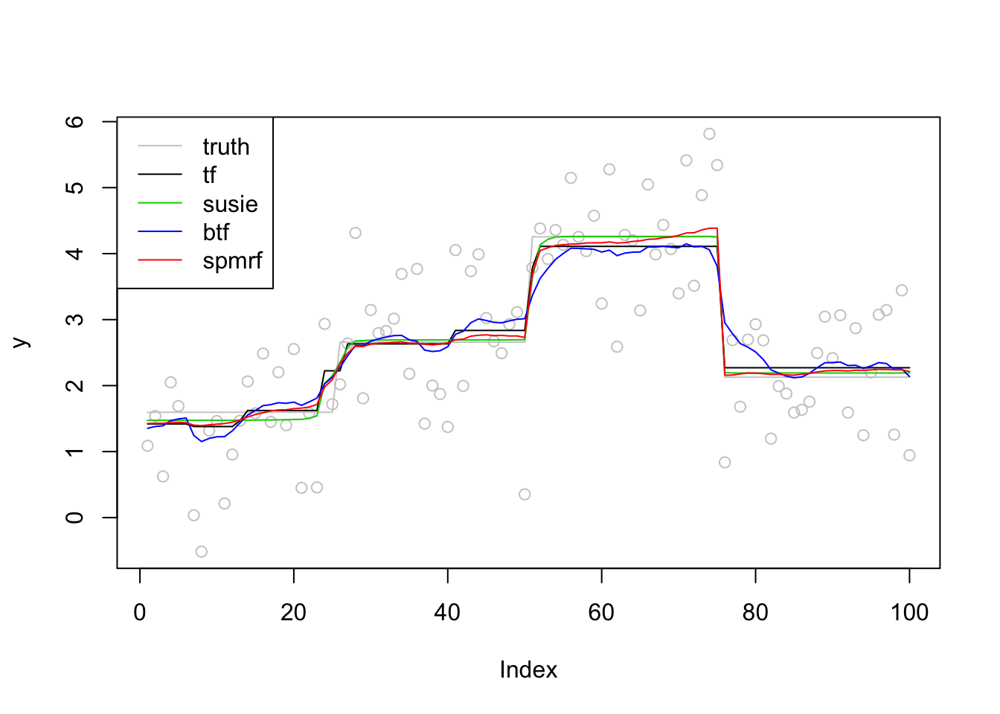
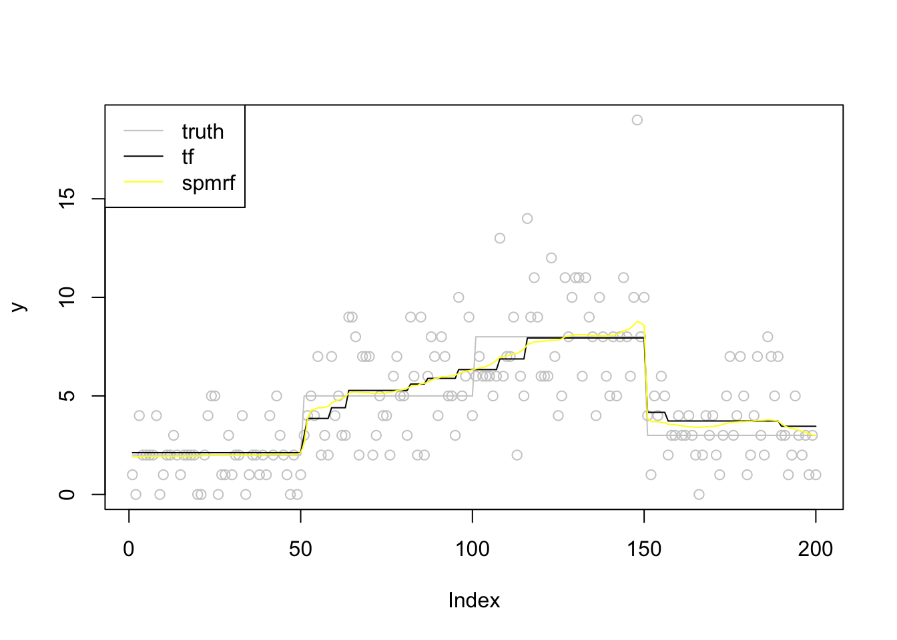

Last updated: 2019-11-09
Checks: 7 0
Knit directory: SMF/
This reproducible R Markdown analysis was created with workflowr (version 1.5.0). The Checks tab describes the reproducibility checks that were applied when the results were created. The Past versions tab lists the development history.
Great! Since the R Markdown file has been committed to the Git repository, you know the exact version of the code that produced these results.
Great job! The global environment was empty. Objects defined in the global environment can affect the analysis in your R Markdown file in unknown ways. For reproduciblity it’s best to always run the code in an empty environment.
The command set.seed(20190719) was run prior to running the code in the R Markdown file. Setting a seed ensures that any results that rely on randomness, e.g. subsampling or permutations, are reproducible.
Great job! Recording the operating system, R version, and package versions is critical for reproducibility.
Nice! There were no cached chunks for this analysis, so you can be confident that you successfully produced the results during this run.
Great job! Using relative paths to the files within your workflowr project makes it easier to run your code on other machines.
Great! You are using Git for version control. Tracking code development and connecting the code version to the results is critical for reproducibility. The version displayed above was the version of the Git repository at the time these results were generated.
Note that you need to be careful to ensure that all relevant files for the analysis have been committed to Git prior to generating the results (you can use wflow_publish or wflow_git_commit). workflowr only checks the R Markdown file, but you know if there are other scripts or data files that it depends on. Below is the status of the Git repository when the results were generated:
Ignored files:
Ignored: .DS_Store
Ignored: .Rhistory
Ignored: .Rproj.user/
Ignored: analysis/.DS_Store
Unstaged changes:
Modified: analysis/index.Rmd
Modified: analysis/poissonmeanscale.Rmd
Note that any generated files, e.g. HTML, png, CSS, etc., are not included in this status report because it is ok for generated content to have uncommitted changes.
These are the previous versions of the R Markdown and HTML files. If you’ve configured a remote Git repository (see ?wflow_git_remote), click on the hyperlinks in the table below to view them.
| File | Version | Author | Date | Message |
|---|---|---|---|---|
| Rmd | 986b961 | Dongyue Xie | 2019-11-09 | wflow_publish(“analysis/tfexample.Rmd”) |
| html | 528036a | Dongyue Xie | 2019-11-08 | Build site. |
| Rmd | f12ab55 | Dongyue Xie | 2019-11-08 | wflow_publish(“analysis/tfexample.Rmd”) |
Normal likelihood: Trend filtering from genlasso, glmgen, lasso form fitted using glmnet, susie-trendfiltering, Bayesian trend filtering from btf, spmrf.
Poisson likelihood: glmgen, spmrf, likelihood expansion, VST.
library(genlasso)
library(glmgen)
library(glmnet)
library(susieR)
library(btf)
library(spmrf)
library(rstan)Generate date from \(y = f + \epsilon\), \(\epsilon\sim N(0,\sigma^2)\). SNR = 1
Step function.
n = 100
x = (1:n)/n
sigma = 1
f = c(rep(3,n/4),rep(5,n/4),rep(8,n/4),rep(4,n/4))
snr = 1
f = f/sqrt(var(f)/sigma^2/snr)
y = f + rnorm(n,0,sigma)
#trend filtering
t1_tf=Sys.time()
fit_tf = genlasso::trendfilter(y,ord=0)
fit_tf_cv = cv.trendfilter(fit_tf)Fold 1 ... Fold 2 ... Fold 3 ... Fold 4 ... Fold 5 ... fit_tf = fit_tf$beta[,fit_tf$lambda==fit_tf_cv$lambda.min]
t2_tf=Sys.time()
#lasso form
#t1_lasso=Sys.time()
#fit_lasso = TF_lasso(y,0)
#t2_lasso=Sys.time()
#susie
t1_susie=Sys.time()
fit_susie = susie_trendfilter(y,0)
t2_susie=Sys.time()
#btf
t1_btf=Sys.time()
fit_btf = btf(y,k=0)
t2_btf=Sys.time()
#spmrf
t1_spmrf=Sys.time()
spmrf_obj = spmrf(data=list(y=y),prior="horseshoe", likelihood="normal", order=1,zeta=0.01,chains=0)the number of chains is less than 1; sampling not donenchain <- 2
ntotsamp <- 1000
nthin <- 1
nburn <- 500
niter <- (ntotsamp/nchain)*nthin + nburn
pars.H <- c("theta", "tau", "gam", "sigma")
spmrf_draw = spmrf(prior="horseshoe", likelihood="normal", order=1, fit=spmrf_obj,data=list(y=y),
par=pars.H, chains=nchain, warmup=nburn, thin=nthin, iter=niter,
control=list(adapt_delta=0.995, max_treedepth=12))
SAMPLING FOR MODEL 'horseshoe_normal_1' NOW (CHAIN 1).
Chain 1:
Chain 1: Gradient evaluation took 7.5e-05 seconds
Chain 1: 1000 transitions using 10 leapfrog steps per transition would take 0.75 seconds.
Chain 1: Adjust your expectations accordingly!
Chain 1:
Chain 1:
Chain 1: Iteration: 1 / 1000 [ 0%] (Warmup)
Chain 1: Iteration: 100 / 1000 [ 10%] (Warmup)
Chain 1: Iteration: 200 / 1000 [ 20%] (Warmup)
Chain 1: Iteration: 300 / 1000 [ 30%] (Warmup)
Chain 1: Iteration: 400 / 1000 [ 40%] (Warmup)
Chain 1: Iteration: 500 / 1000 [ 50%] (Warmup)
Chain 1: Iteration: 501 / 1000 [ 50%] (Sampling)
Chain 1: Iteration: 600 / 1000 [ 60%] (Sampling)
Chain 1: Iteration: 700 / 1000 [ 70%] (Sampling)
Chain 1: Iteration: 800 / 1000 [ 80%] (Sampling)
Chain 1: Iteration: 900 / 1000 [ 90%] (Sampling)
Chain 1: Iteration: 1000 / 1000 [100%] (Sampling)
Chain 1:
Chain 1: Elapsed Time: 10.9515 seconds (Warm-up)
Chain 1: 6.58406 seconds (Sampling)
Chain 1: 17.5356 seconds (Total)
Chain 1:
SAMPLING FOR MODEL 'horseshoe_normal_1' NOW (CHAIN 2).
Chain 2:
Chain 2: Gradient evaluation took 2.8e-05 seconds
Chain 2: 1000 transitions using 10 leapfrog steps per transition would take 0.28 seconds.
Chain 2: Adjust your expectations accordingly!
Chain 2:
Chain 2:
Chain 2: Iteration: 1 / 1000 [ 0%] (Warmup)
Chain 2: Iteration: 100 / 1000 [ 10%] (Warmup)
Chain 2: Iteration: 200 / 1000 [ 20%] (Warmup)
Chain 2: Iteration: 300 / 1000 [ 30%] (Warmup)
Chain 2: Iteration: 400 / 1000 [ 40%] (Warmup)
Chain 2: Iteration: 500 / 1000 [ 50%] (Warmup)
Chain 2: Iteration: 501 / 1000 [ 50%] (Sampling)
Chain 2: Iteration: 600 / 1000 [ 60%] (Sampling)
Chain 2: Iteration: 700 / 1000 [ 70%] (Sampling)
Chain 2: Iteration: 800 / 1000 [ 80%] (Sampling)
Chain 2: Iteration: 900 / 1000 [ 90%] (Sampling)
Chain 2: Iteration: 1000 / 1000 [100%] (Sampling)
Chain 2:
Chain 2: Elapsed Time: 14.173 seconds (Warm-up)
Chain 2: 13.2257 seconds (Sampling)
Chain 2: 27.3987 seconds (Total)
Chain 2: Warning: There were 11 divergent transitions after warmup. Increasing adapt_delta above 0.995 may help. See
http://mc-stan.org/misc/warnings.html#divergent-transitions-after-warmupWarning: Examine the pairs() plot to diagnose sampling problemsWarning: Bulk Effective Samples Size (ESS) is too low, indicating posterior means and medians may be unreliable.
Running the chains for more iterations may help. See
http://mc-stan.org/misc/warnings.html#bulk-ess#fit_spmrf = as.array(spmrf_draw)
fit_spmrf_ci = extract_theta(spmrf_draw,obstype = 'normal',alpha=0.05)
fit_spmrf = fit_spmrf_ci$postmed
t2_spmrf=Sys.time()
plot(y,col = 'grey80')
lines(f,col='grey80')
lines(fit_tf,col=1)
#lines(c(fit_lasso),col=2)
lines(fit_susie$fitted,col=3)
lines(apply(fit_btf$f,2,mean),col=4)
lines(fit_spmrf,col=2)
legend('topleft',c('truth','tf','susie','btf','spmrf'),lty=c(1,1,1,1,1),col=c('grey80',1,3,4,2))
| Version | Author | Date |
|---|---|---|
| 528036a | Dongyue Xie | 2019-11-08 |
run time
paste0('tf run time:',round(t2_tf-t1_tf,2))[1] "tf run time:0.8"#paste0('tf_lasso run time:',round(t2_lasso-t1_lasso,2))
paste0('susie run time:',round(t2_susie-t1_susie,2))[1] "susie run time:0.11"paste0('btf run time:',round(t2_btf-t1_btf,2))[1] "btf run time:5.74"paste0('spmrf run time:')[1] "spmrf run time:"round(t2_spmrf-t1_spmrf,2)Time difference of 1.44 minsn = 200
x = (1:n)/n
f = c(rep(2,n/4),rep(5,n/4),rep(8,n/4),rep(3,n/4))
y = rpois(n,f)
#trend filtering
t1_tf=Sys.time()
fit_tf = glmgen::trendfilter(x,y,k=0,family = 'poisson')
t2_tf=Sys.time()
# #lasso form
# t1_lasso=Sys.time()
# fit_lasso = TF_lasso(y,0)
# t2_lasso=Sys.time()
# #susie
# t1_susie=Sys.time()
# fit_susie = susie_trendfilter(y,0)
# t2_susie=Sys.time()
# #btf
# t1_btf=Sys.time()
# fit_btf = btf(y,k=0)
# t2_btf=Sys.time()
#spmrf
t1_spmrf=Sys.time()
spmrf_obj = spmrf(data=list(y=y),prior="horseshoe", likelihood="poisson",order=1,zeta=0.01,chains=0)the number of chains is less than 1; sampling not donenchain <- 2
ntotsamp <- 1000
nthin <- 1
nburn <- 500
niter <- (ntotsamp/nchain)*nthin + nburn
pars.H <- c("theta", "tau", "gam")
spmrf_draw = spmrf(prior="horseshoe", likelihood="poisson", order=1, fit=spmrf_obj,data=list(y=y),
par=pars.H, chains=nchain, warmup=nburn, thin=nthin, iter=niter,
control=list(adapt_delta=0.995, max_treedepth=12))
SAMPLING FOR MODEL 'horseshoe_poisson_1' NOW (CHAIN 1).
Chain 1:
Chain 1: Gradient evaluation took 8.2e-05 seconds
Chain 1: 1000 transitions using 10 leapfrog steps per transition would take 0.82 seconds.
Chain 1: Adjust your expectations accordingly!
Chain 1:
Chain 1:
Chain 1: Iteration: 1 / 1000 [ 0%] (Warmup)
Chain 1: Iteration: 100 / 1000 [ 10%] (Warmup)
Chain 1: Iteration: 200 / 1000 [ 20%] (Warmup)
Chain 1: Iteration: 300 / 1000 [ 30%] (Warmup)
Chain 1: Iteration: 400 / 1000 [ 40%] (Warmup)
Chain 1: Iteration: 500 / 1000 [ 50%] (Warmup)
Chain 1: Iteration: 501 / 1000 [ 50%] (Sampling)
Chain 1: Iteration: 600 / 1000 [ 60%] (Sampling)
Chain 1: Iteration: 700 / 1000 [ 70%] (Sampling)
Chain 1: Iteration: 800 / 1000 [ 80%] (Sampling)
Chain 1: Iteration: 900 / 1000 [ 90%] (Sampling)
Chain 1: Iteration: 1000 / 1000 [100%] (Sampling)
Chain 1:
Chain 1: Elapsed Time: 42.7543 seconds (Warm-up)
Chain 1: 25.4867 seconds (Sampling)
Chain 1: 68.241 seconds (Total)
Chain 1:
SAMPLING FOR MODEL 'horseshoe_poisson_1' NOW (CHAIN 2).
Chain 2:
Chain 2: Gradient evaluation took 5e-05 seconds
Chain 2: 1000 transitions using 10 leapfrog steps per transition would take 0.5 seconds.
Chain 2: Adjust your expectations accordingly!
Chain 2:
Chain 2:
Chain 2: Iteration: 1 / 1000 [ 0%] (Warmup)
Chain 2: Iteration: 100 / 1000 [ 10%] (Warmup)
Chain 2: Iteration: 200 / 1000 [ 20%] (Warmup)
Chain 2: Iteration: 300 / 1000 [ 30%] (Warmup)
Chain 2: Iteration: 400 / 1000 [ 40%] (Warmup)
Chain 2: Iteration: 500 / 1000 [ 50%] (Warmup)
Chain 2: Iteration: 501 / 1000 [ 50%] (Sampling)
Chain 2: Iteration: 600 / 1000 [ 60%] (Sampling)
Chain 2: Iteration: 700 / 1000 [ 70%] (Sampling)
Chain 2: Iteration: 800 / 1000 [ 80%] (Sampling)
Chain 2: Iteration: 900 / 1000 [ 90%] (Sampling)
Chain 2: Iteration: 1000 / 1000 [100%] (Sampling)
Chain 2:
Chain 2: Elapsed Time: 42.4101 seconds (Warm-up)
Chain 2: 25.4277 seconds (Sampling)
Chain 2: 67.8378 seconds (Total)
Chain 2: Warning: There were 5 divergent transitions after warmup. Increasing adapt_delta above 0.995 may help. See
http://mc-stan.org/misc/warnings.html#divergent-transitions-after-warmupWarning: Examine the pairs() plot to diagnose sampling problemsWarning: The largest R-hat is 1.08, indicating chains have not mixed.
Running the chains for more iterations may help. See
http://mc-stan.org/misc/warnings.html#r-hatWarning: Bulk Effective Samples Size (ESS) is too low, indicating posterior means and medians may be unreliable.
Running the chains for more iterations may help. See
http://mc-stan.org/misc/warnings.html#bulk-essWarning: Tail Effective Samples Size (ESS) is too low, indicating posterior variances and tail quantiles may be unreliable.
Running the chains for more iterations may help. See
http://mc-stan.org/misc/warnings.html#tail-ess#fit_spmrf = as.array(spmrf_draw)
fit_spmrf_ci = extract_theta(spmrf_draw,obstype = 'poisson',alpha=0.05)
fit_spmrf = fit_spmrf_ci$postmed
t2_spmrf=Sys.time()
plot(y,col = 'grey80')
lines(f,col='grey80')
lines(exp(fit_tf$beta[,12]),col=1)
#lines(c(fit_lasso),col=2)
#lines(fit_susie$fitted,col=3)
#lines(apply(fit_btf$f,2,mean),col=4)
lines(fit_spmrf,col=7)
legend('topleft',c('truth','tf','spmrf'),lty=c(1,1,1),col=c('grey80',1,7))
| Version | Author | Date |
|---|---|---|
| 528036a | Dongyue Xie | 2019-11-08 |
run time
paste0('tf run time:')[1] "tf run time:"round(t2_tf-t1_tf,2)Time difference of 0.01 secs#paste0('tf_lasso run time:',round(t2_lasso-t1_lasso,2))
#paste0('susie run time:',round(t2_susie-t1_susie,2))
#paste0('btf run time:',round(t2_btf-t1_btf,2))
paste0('spmrf run time:')[1] "spmrf run time:"round(t2_spmrf-t1_spmrf,2)Time difference of 2.87 mins
sessionInfo()R version 3.6.1 (2019-07-05)
Platform: x86_64-apple-darwin15.6.0 (64-bit)
Running under: macOS High Sierra 10.13.6
Matrix products: default
BLAS: /Library/Frameworks/R.framework/Versions/3.6/Resources/lib/libRblas.0.dylib
LAPACK: /Library/Frameworks/R.framework/Versions/3.6/Resources/lib/libRlapack.dylib
locale:
[1] en_US.UTF-8/en_US.UTF-8/en_US.UTF-8/C/en_US.UTF-8/en_US.UTF-8
attached base packages:
[1] stats graphics grDevices utils datasets methods base
other attached packages:
[1] rstan_2.19.2 ggplot2_3.2.1 StanHeaders_2.19.0
[4] spmrf_1.2 btf_1.2 susieR_0.8.0
[7] glmnet_2.0-18 foreach_1.4.7 glmgen_0.0.3
[10] genlasso_1.4 igraph_1.2.4.1 Matrix_1.2-17
[13] MASS_7.3-51.4
loaded via a namespace (and not attached):
[1] tidyselect_0.2.5 xfun_0.10 purrr_0.3.2
[4] lattice_0.20-38 colorspace_1.4-1 htmltools_0.4.0
[7] stats4_3.6.1 loo_2.1.0 yaml_2.2.0
[10] rlang_0.4.0 pkgbuild_1.0.5 later_1.0.0
[13] pillar_1.4.2 glue_1.3.1 withr_2.1.2
[16] matrixStats_0.55.0 stringr_1.4.0 munsell_0.5.0
[19] gtable_0.3.0 workflowr_1.5.0 codetools_0.2-16
[22] coda_0.19-3 evaluate_0.14 inline_0.3.15
[25] knitr_1.25 callr_3.3.2 ps_1.3.0
[28] httpuv_1.5.2 parallel_3.6.1 Rcpp_1.0.2
[31] promises_1.1.0 backports_1.1.5 scales_1.0.0
[34] fs_1.3.1 gridExtra_2.3 digest_0.6.21
[37] stringi_1.4.3 processx_3.4.1 dplyr_0.8.3
[40] grid_3.6.1 rprojroot_1.3-2 cli_1.1.0
[43] tools_3.6.1 magrittr_1.5 lazyeval_0.2.2
[46] tibble_2.1.3 crayon_1.3.4 whisker_0.4
[49] pkgconfig_2.0.3 prettyunits_1.0.2 assertthat_0.2.1
[52] rmarkdown_1.16 iterators_1.0.12 R6_2.4.0
[55] git2r_0.26.1 compiler_3.6.1